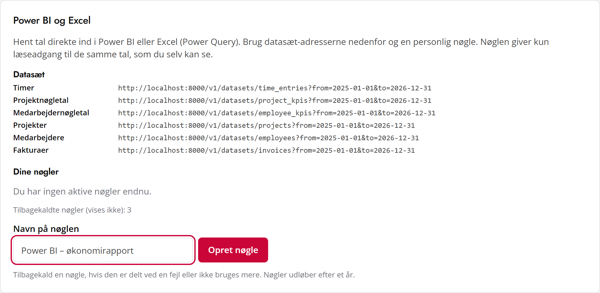

Hvad Power BI er, hvad ARCnordic Tid leverer, og hvordan I kommer i gang — trin for trin
Power BI er Microsofts værktøj til rapporter og dashboards. Man henter data ind fra et eller flere systemer, kobler dem sammen og bygger grafer, tabeller og nøgletal, som kan filtreres med et klik — fx “faktureringsgrad pr. måned for afdeling Arkitektur” eller “timer pr. kunde i år”.
| Del | Hvad den bruges til | Pris |
|---|---|---|
| Power BI Desktop | Program til Windows, hvor man henter data og bygger rapporten. Her starter I. | Gratis |
| Power BI-tjenesten (app.powerbi.com) | Deling af rapporter i organisationen, automatisk opdatering af tallene, visning i browser, Teams og på mobil. | Pro-licens pr. bruger, der deler eller ser delte rapporter (indgår i nogle Microsoft 365-planer) |
| Excel – Power Query | Samme dataforbindelse direkte i Excel (Data → Hent data). Godt til hurtige analyser og pivottabeller. | Med i Excel |
Alle adresser har formen <server>/v1/datasets/<navn>?from=ÅÅÅÅ-MM-DD&to=ÅÅÅÅ-MM-DD. Lokalt er serveren http://localhost:8000; når systemet bliver hostet, får den en https-adresse. Perioden må højst være ca. 2 år pr. hentning. Tal er med punktum som decimaltegn (det håndterer Power BI selv), datoer er ÅÅÅÅ-MM-DD.
| Datasæt | Indhold | Kolonner |
|---|---|---|
| time_entries | Én række pr. registrering (alle status). Periode = registreringsdato. | date, employee (initialer), project_number, project, task, absence_code, hours, billable, status |
| project_kpis | Nøgletal pr. projekt i perioden — som i “Nøgletal (Excel)”. | project_number, project, customer, hours, billable_hours, billable_share, cost_dkk, invoiced_dkk, invoiced_hours, effective_rate_dkk, margin_dkk, margin_share |
| employee_kpis | Nøgletal pr. aktiv medarbejder i perioden. | employee, full_name, department, work_hours, billable_hours, absence_hours, billable_share |
| projects | Alle projekter (perioden ignoreres). | number, name, customer, status, billable |
| employees | Alle medarbejdere (perioden ignoreres). | initials, full_name, department, active |
| invoices | Bogførte fakturaer og kreditnotaer. Periode = fakturadato. | number, type (invoice/credit), invoice_date, due_date, customer, project_number, subtotal_dkk, vat_dkk |
time_entries indeholder også kladder. ARCnordic Tids egne nøgletal tæller kun indsendte, godkendte og fakturerede timer (submitted, approved, invoiced). Brug samme filter for at få samme tal (se målingerne i afsnit 5).project_number er arbejde; rækker med absence_code er fravær.subtotal_dkk, så en simpel sum giver nettoomsætningen.arct_). Den vises kun én gang — glemmer du den, tilbagekalder du den og opretter en ny.
http://localhost:8000/v1/datasets/time_entries?from=2025-01-01&to=2026-12-31.Authorization til venstre og Bearer arct_…din nøgle… til højre (ordet Bearer, et mellemrum, så nøglen).billable som Sand/falsk. Gentag for de datasæt, I skal bruge.Opret i Power Query tre parametre — Server (fx http://localhost:8000), FraDato og TilDato (tekst, ÅÅÅÅ-MM-DD) — og indsæt denne forespørgsel via Avanceret editor. Formen med RelativePath og Query er den, Power BI-tjenesten kræver for automatisk opdatering.
let
Nøgle = "arct_…indsæt din nøgle…",
Kilde = Json.Document(Web.Contents(Server, [
RelativePath = "v1/datasets/time_entries",
Query = [from = FraDato, to = TilDato],
Headers = [Authorization = "Bearer " & Nøgle]
])),
Tabel = Table.FromRecords(Kilde),
Typer = Table.TransformColumnTypes(Tabel, {
{"date", type date}, {"hours", type number}, {"billable", type logical}
})
in
Typer
.pbix-filen med personer, der ikke selv må se tallene. Når rapporten deles via Power BI-tjenesten, ser modtagerne kun rapporten — ikke nøglen.Data → Hent data → Fra andre kilder → Fra web → Avanceret — præcis samme URL og header som ovenfor. Brug Opdater alle for at hente nye tal.
| Fra | Til | Type |
|---|---|---|
| time_entries[employee] | employees[initials] | Mange → én |
| time_entries[project_number] | projects[number] | Mange → én |
| invoices[project_number] | projects[number] | Mange → én |
| project_kpis[project_number] | projects[number] | Én → én |
| employee_kpis[employee] | employees[initials] | Én → én |
| time_entries[date], invoices[invoice_date] | Kalender[Dato] | Mange → én |
Kalendertabel (Modellering → Ny tabel): Kalender = ADDCOLUMNS(CALENDAR(DATE(2025,1,1), DATE(2027,12,31)), "År", YEAR([Date]), "Måned", FORMAT([Date], "mmm yyyy"), "Uge", WEEKNUM([Date], 21)) — 21 giver danske ISO-uger.
Talte timer =
CALCULATE ( SUM ( time_entries[hours] ),
time_entries[status] IN { "submitted", "approved", "invoiced" } )
Arbejdstimer =
CALCULATE ( [Talte timer], NOT ISBLANK ( time_entries[project_number] ) )
Fakturerbare timer =
CALCULATE ( [Arbejdstimer], time_entries[billable] = TRUE () )
Faktureringsgrad = -- fakturerbare ÷ alle arbejdstimer
DIVIDE ( [Fakturerbare timer], [Arbejdstimer] )
Faktureret (netto) = -- kreditnotaer er negative
SUM ( invoices[subtotal_dkk] )
Fraværstimer =
CALCULATE ( [Talte timer], NOT ISBLANK ( time_entries[absence_code] ) )
Projektets dækningsbidrag, DB-grad og effektiv timepris ligger færdigberegnet i project_kpis (samme formler som systemet, testet med samme eksempler). Brug dem direkte i stedet for at genberegne.
project_kpis med timer, faktureret, DB og DB-grad; filtrér på kunde og status.| Situation | Sådan opdateres |
|---|---|
| I dag (lokal installation) | Power BI Desktop og Excel kan hente tallene, når ARCnordic Tid kører på samme pc (localhost). Tryk Opdater. Power BI-tjenesten på internettet kan ikke nå en lokal pc. |
| Når systemet er hostet (forslag i docs/operations.md) | Skift parameteren Server til den nye https-adresse. Udgiv rapporten til Power BI-tjenesten, sæt datakildens godkendelse til Anonym og privatlivsniveau til Organisation, og planlæg opdatering (fx hver morgen kl. 6). Der kræves ingen gateway, fordi tjenesten er tilgængelig via https. |
| Besked / symptom | Årsag og løsning |
|---|---|
| 401 unauthenticated | Nøglen er forkert, tilbagekaldt eller udløbet — eller ordet Bearer mangler foran. Opret en ny nøgle. |
| 403 forbidden | Ejeren af nøglen har ikke længere rollen Økonomi, Ledelse eller Admin. |
| 400 invalid_period | from er efter to, eller perioden er længere end ca. 2 år. Hent flere år i flere forespørgsler. |
| “Kan ikke oprette forbindelse” | ARCnordic Tid kører ikke. Start den (“Start ARCnordic Tid”) og prøv igen. |
| Tallene afviger fra systemet | Husk statusfilteret (afsnit 5) og samme periode. Fravær hører ikke med i arbejdstimer. |
| “Dynamisk datakilde” ved opdatering i tjenesten | Brug formen med RelativePath og Query fra afsnit 4 i stedet for at sætte hele URL’en sammen som tekst. |